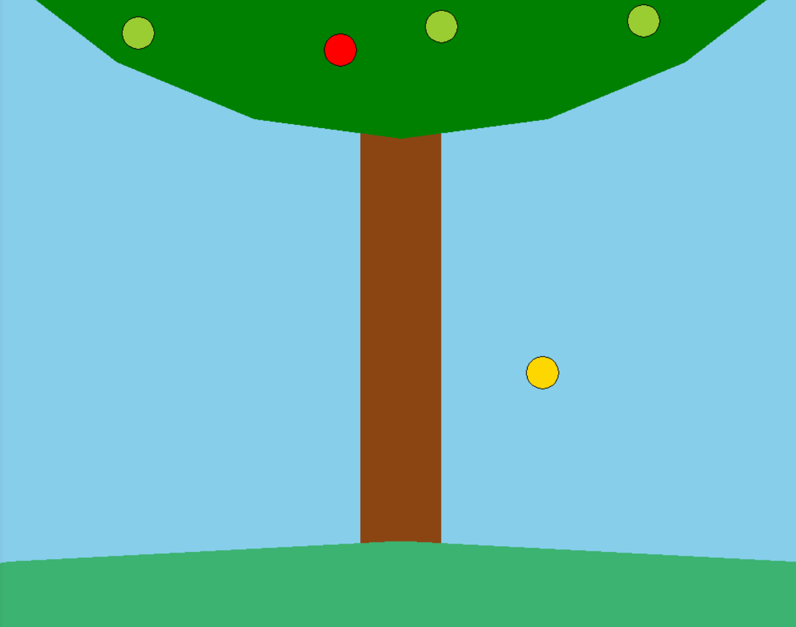
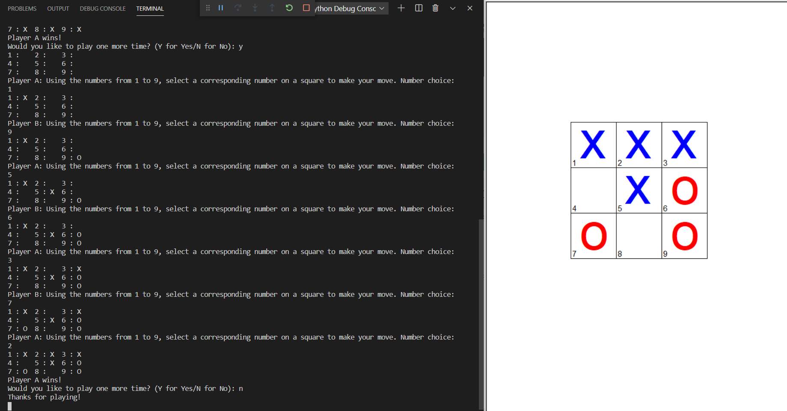

Home at Last
Portfolio
About Me
Here is my Portfolio Page!
Falling Apples

In this project, an apple tree and backdrop is drawn. The user is then asked to choose an amount, from one to six, and a size, small or large, for the apples. The program draws the apples, giving them a randomized color of red, gold, or yellow green. Afterwards, the user is given a prompt to start the apple drop, causing the apples to fall from the tree and bounce off the hill.
Tic Tac Toe

In this project, a game of Tic Tac Toe is played in the terminal and displayed on the screen. Player A controls X's and goes first, while player B controls O's and goes second. Player A inputs a number corresponding with the numbered square they want to mark with an X, and then Player B must input a different number to mark a square with an O. If a player gets a line of three and wins, the program will declare the winning player. If the board becomes full without a winner and ends in a tie, the program will declare that there has been a tie and no one wins. After a game is played, the players will be asked if they want to play again. If yes, the game will reset, allowing for another game to be played. If no, the program will end.